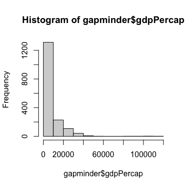

Rows: 1704 Columns: 6
── Column specification ────────────────────────────────────────────────────────
Delimiter: ","
chr (2): country, continent
dbl (4): year, lifeExp, pop, gdpPercap
ℹ Use `spec()` to retrieve the full column specification for this data.
ℹ Specify the column types or set `show_col_types = FALSE` to quiet this message.
:::
Here are the first 6 rows of data
top_gap <-head(gapminder, n =10) bot_gap <-tail(gapminder, n =10) knitr::kable(top_gap,caption ="The first 6 rows of the dataset, gapminder",digits =2)
The first 6 rows of the dataset, gapminder
country
continent
year
lifeExp
pop
gdpPercap
Afghanistan
Asia
1952
28.80
8425333
779.45
Afghanistan
Asia
1957
30.33
9240934
820.85
Afghanistan
Asia
1962
32.00
10267083
853.10
Afghanistan
Asia
1967
34.02
11537966
836.20
Afghanistan
Asia
1972
36.09
13079460
739.98
Afghanistan
Asia
1977
38.44
14880372
786.11
Afghanistan
Asia
1982
39.85
12881816
978.01
Afghanistan
Asia
1987
40.82
13867957
852.40
Afghanistan
Asia
1992
41.67
16317921
649.34
Afghanistan
Asia
1997
41.76
22227415
635.34
kable(bot_gap)
country
continent
year
lifeExp
pop
gdpPercap
Zimbabwe
Africa
1962
52.358
4277736
527.2722
Zimbabwe
Africa
1967
53.995
4995432
569.7951
Zimbabwe
Africa
1972
55.635
5861135
799.3622
Zimbabwe
Africa
1977
57.674
6642107
685.5877
Zimbabwe
Africa
1982
60.363
7636524
788.8550
Zimbabwe
Africa
1987
62.351
9216418
706.1573
Zimbabwe
Africa
1992
60.377
10704340
693.4208
Zimbabwe
Africa
1997
46.809
11404948
792.4500
Zimbabwe
Africa
2002
39.989
11926563
672.0386
Zimbabwe
Africa
2007
43.487
12311143
469.7093
1+1
[1] 2
Introduction
let’s look at the lifespan
hist(gapminder$lifeExp)
Let’s look at the GDP per capita
hist(gapminder$gdpPercap)

Let’s fit a simple linear model of the effect of year on life expectancy
fit <-lm(lifeExp ~ year, data = gapminder)fit
Call:
lm(formula = lifeExp ~ year, data = gapminder)
Coefficients:
(Intercept) year
-585.6522 0.3259
And let’s look at the coefficient table:
fit_coef <-tidy(fit)knitr::kable(fit_coef,caption ="A table of the coefficients")
Life expectancy from 1952 - 2007 for Australia. Life expentancy increases steadily except from 1962 to 1969. We can safely say that our life expectancy is higher than it has ever been!
Australia’s life expectancy has increased a great deal over the past 50 years
─ Session info ───────────────────────────────────────────────────────────────
setting value
version R version 4.4.0 (2024-04-24)
os macOS Sonoma 14.5
system aarch64, darwin20
ui X11
language (EN)
collate en_US.UTF-8
ctype en_US.UTF-8
tz Australia/Hobart
date 2024-05-30
pandoc 3.1.13 @ /opt/homebrew/bin/ (via rmarkdown)
─ Packages ───────────────────────────────────────────────────────────────────
! package * version date (UTC) lib source
R all <NA> <NA> [?] <NA>
[1] /Users/nick/Library/R/arm64/4.4/library
[2] /Library/Frameworks/R.framework/Versions/4.4-arm64/Resources/library
R ── Package was removed from disk.
─ External software ──────────────────────────────────────────────────────────
setting value
cairo 1.17.6
cairoFT
pango 1.50.14
png 1.6.40
jpeg 9.5
tiff LIBTIFF, Version 4.5.0
tcl 8.6.13
curl 8.6.0
zlib 1.2.12
bzlib 1.0.8, 13-Jul-2019
xz 5.4.4
deflate
PCRE 10.42 2022-12-11
ICU 74.1
TRE TRE 0.8.0 R_fixes (BSD)
iconv Apple or GNU libiconv 1.11
readline 5.2
BLAS /Library/Frameworks/R.framework/Versions/4.4-arm64/Resources/lib/libRblas.0.dylib
lapack /Library/Frameworks/R.framework/Versions/4.4-arm64/Resources/lib/libRlapack.dylib
lapack_version 3.12.0
─ Python configuration ───────────────────────────────────────────────────────
Python is not available
──────────────────────────────────────────────────────────────────────────────